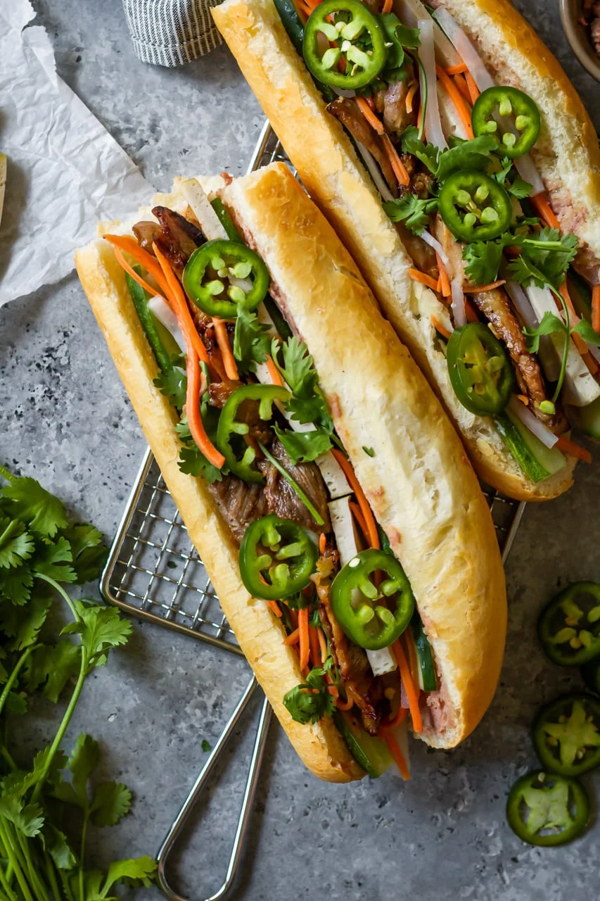

Go Back
Bahn Mi

Arguably the best sandwich in the world, the bahn mi is an easy creation by cooking some pork and prepping some herbs and pickled carrots
Ingredients
- 1 Baguette
- 1 Jalapeno
- 1 Pork Loin Teriyaki Marinated
- Sliced Carrots and Daikon Radish
- Mayonnaise
- Cilantro
Creation
- Roast the pork loin in the oven
- Pickle the carrots and radish in a jar with a sugar, white vinegar solution
- Toast the baguette
- Assemble the sandwich by adding sliced pork, mayo, pickled carrots and herbs and spices. Add gochujang or sriracha for even more flavor!